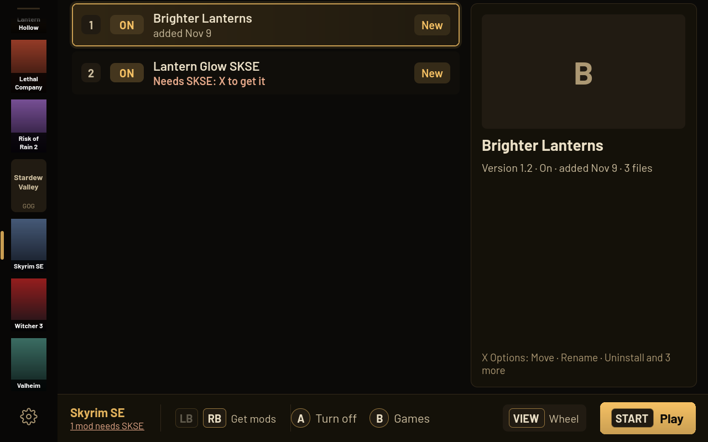
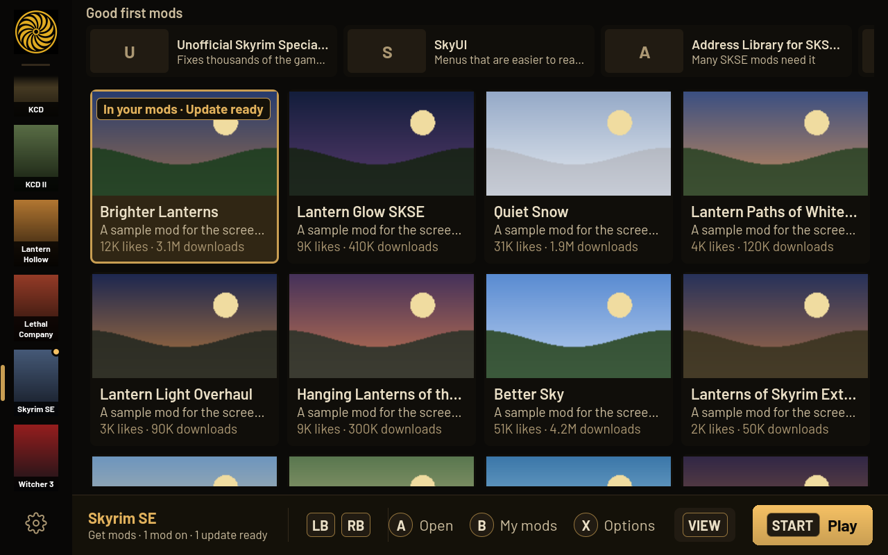
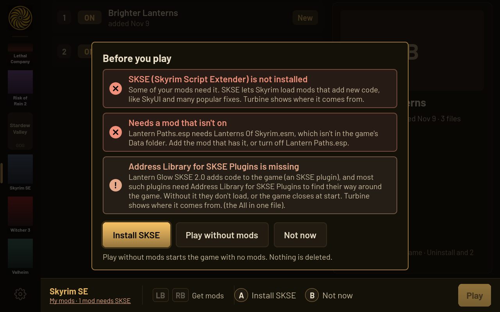
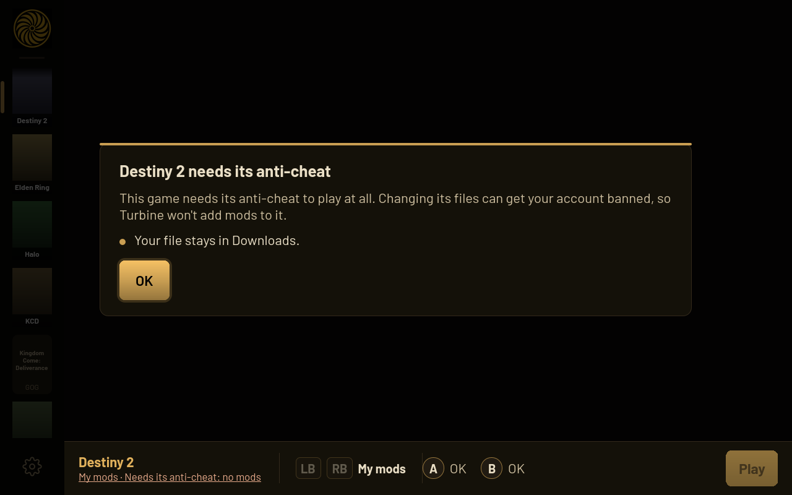

What Turbine is
Turbine is a mod manager made for a handheld, not a desktop with a mouse. Every screen works with the controller and with touch, the next step is always on screen, and the common thing is one press. Mods go into the game by themselves a few seconds after your last change, so there is no Save to remember.




Pictures from Turbine 0.6's automatic checks, with made-up sample mods.
Install on SteamOS
You do this once, in Desktop Mode. After that Turbine lives in your Steam library and keeps itself up to date.
-
Switch to Desktop Mode
Press the Steam button, then Power, then Switch to Desktop.
-
Download Turbine
Open the latest release in a browser and download TurbineModManager.flatpak. It goes to your Downloads folder.
-
Install it
Open Downloads and double-click TurbineModManager.flatpak. Discover opens; press Install. The first install also downloads the parts Turbine runs on from Flathub, so give it a few minutes.
Prefer a terminal?
flatpak install --user ~/Downloads/TurbineModManager.flatpak -
Add it to Steam
Open the app launcher (bottom left), find Turbine Mod Manager, right-click it and choose Add to Steam. Or in Steam: Games, Add a Non-Steam Game to My Library, tick Turbine Mod Manager, and press Add Selected Programs.
-
Go back to Game Mode
Double-click Return to Gaming Mode on the desktop. Turbine is in your Library under Non-Steam. Start it like any game.
The first time it starts, Turbine shows a short tour of the buttons. Settings, Help, Beginner tutorial brings it back any time.
Features
Play from every game screen
Hold Start for 3 seconds, or press A on Play. Turbine checks the game, puts your mods in and starts it. If something needs a decision, it asks once, with the fix as the first button.
Get mods from Nexus Mods
Browse by game with pictures, likes and downloads. With Premium, a mod installs with one press. Free accounts get Nexus's own download page inside Turbine; press Slow download and the mod is added and turned on.
Mods apply themselves
Changes go into the game 3 seconds after your last edit, when you leave Turbine and when it closes. Order mods where order matters; Turbine suggests a sort for games that need one.
Script loaders handled
Turbine knows when a mod needs a loader (like SKSE for Skyrim, BepInEx or SMAPI) and offers to install it before you play.
Every way back is one press
Play without mods, go back to a setup that worked, or turn every mod off with Undo. Uninstalled mods stay in Removed mods for 7 days.
Safe by design
Turbine only removes files it placed itself, backs up any game file a mod replaces, and never runs anything from a mod archive. For games it knows, it keeps a copy of your saves before a modded Play.
Any game
Games Turbine knows get their full rules. Every other Steam and Heroic game gets Basic support: each mod goes where its files say, and Turbine asks once, with its best guess ready, when it can't tell.
Made for your hands
Controller first, touch just as good. Interface size from 50% to 150%. Text entry uses Steam's on-screen keyboard. A press never goes through a pop-up to the screen behind it.
The buttons
| A | Select, or the main action (turn a mod on or off) |
|---|---|
| B | Back one step, everywhere |
| X | Options for the selected thing |
| Y | Find: search, sort and categories |
| LB / RB | Tabs (My mods, Get mods) |
| LT / RT | Page up and down |
| View | The quick wheel |
| Start | Settings. Hold it for 3 seconds to play |
| Right stick | A pointer, for anything you'd rather point at |
| Keyboard | Arrows, Enter, Esc to go back, Tab for the next page, Ctrl+F to find, F1 for Help, Ctrl+Enter to play |
| Mouse | Click to select, right-click for options, the Back button to go back |
Games and stores
Turbine finds your games from Steam and from Heroic (Epic Games Store and GOG), on internal storage and SD cards. Mods come from Nexus Mods, from Thunderstore for the games that use it, or from zip, 7z and rar files you already downloaded.
Full rules
Where every file goes, load order, loaders and checks before Play.
- Skyrim Special Edition
- Cyberpunk 2077
- The Witcher 3
- Stardew Valley
- Valheim
- Lethal Company
- Risk of Rain 2
- Kingdom Come: Deliverance
- Kingdom Come: Deliverance II
Offline mods, game folder untouched
These run mods offline through me3. Turbine asks once before the first modded Play and says plainly what the risk is.
- Elden Ring (with Seamless Co-op as a choice at Play)
- Elden Ring Nightreign
- Armored Core VI
- Dark Souls III
- Sekiro
Basic support
Every other Steam and Heroic game. Mods go where their files say they belong; Turbine asks once when it can't tell.
- Hogwarts Legacy and any game Turbine doesn't know yet
- Halo: The Master Chief Collection, with a guide to its own anti-cheat switch
Anti-cheat policy
Turbine never adds mods to a game that needs its anti-cheat to play online. Changing those games' files can get your account banned, so the Get mods tab isn't there, Play with a mod on is refused, and the game's status says why. A file you downloaded for it stays in Downloads.
That includes Apex Legends, Dead by Daylight, Destiny 2, Fall Guys, Fortnite, PUBG: Battlegrounds, Rainbow Six Siege, The Finals, and any game where Turbine finds an anti-cheat it has no safe rule for.
Games with a safe offline way (the me3 games above, Halo's own Anti-Cheat Disabled mode) get it, explained once in plain words. Turbine always puts the anti-cheat starter back exactly as it was.
The browser helper (Chrome)
Nexus opens inside Turbine, and that is all most people need. The optional browser helper is a small extension for Chrome, Brave, Edge, Chromium or Vivaldi that:
- Signs Turbine in with your browser. Google and some other sign-ins don't work inside an app. Press Sign in with my browser in Turbine, sign in to Nexus in Chrome, and the helper hands Turbine your Nexus sign-in (nexusmods.com only, and only after you pressed the button).
- Sends mods you download from Nexus in Chrome straight to the right game in Turbine.
- Shows what Turbine is doing in a small panel on Nexus pages.
Set it up once, in Desktop Mode
- In Turbine, open Settings, Getting mods, and choose Set up on Browser helper. Turbine puts the helper's folder in Downloads and shows the steps.
- In Chrome, open
chrome://extensionsand turn on Developer mode (top right). - Press Load unpacked and pick that folder.
- Back in Turbine, choose Pair. The helper says "Paired with Turbine". Done; it updates itself after this.
The helper only talks to Turbine on your own device (127.0.0.1), never clicks anything on Nexus, and only reads Nexus's own pages.
Decky plugin (optional)
With Decky Loader, Turbine gets a panel in the Quick Access menu: for the game you're in, Mods on or off and Play with or without mods, without opening Turbine. Turbine works the same without it.
Decky installs it from this address:
https://github.com/Ravenor907/Turbine-Mod-Manager/releases/latest/download/Turbine-Decky.zip
- Press the Quick Access button, open Decky (the plug), then its gear.
- Open Developer, then Install Plugin From URL. Type or paste the address above, then Install. No Developer tab? In General, turn on Developer Mode first.
No Decky yet? In Desktop Mode, get its installer from decky.xyz and pick the release version. Turbine's Settings, Help, Steam menu plugin shows the same step with a Copy button.
Questions
Do I need a Nexus Mods account?
For mods from Nexus, yes, a free account is enough. Thunderstore mods and files you already downloaded need no account. Premium only skips Nexus's download page.
Will it break my game?
Turbine only removes files it placed itself and backs up any game file a mod replaces. Play without mods starts the game clean without deleting anything, and the game menu can put back the last setup that worked.
Can I get banned?
Turbine refuses mods for games that need their anti-cheat online. For games with a safe offline way it uses that way and tells you the risk first. Don't take a save you modded offline into online play.
Does it work on Windows or other Linux systems?
No. Turbine is made for SteamOS on handhelds, in Game Mode and Desktop Mode.
How does it update?
Turbine checks the Releases page and updates itself. In Game Mode it closes when the update is ready, and you start it again from Steam.
How do I uninstall it?
For me3 games (Elden Ring and others), first use Settings, Help, Undo the launch options change, and paste back what it shows in Steam. Then turn every mod off so the games are back to normal, and remove Turbine in Discover.
Troubleshooting and help
A game won't start
- Press View, then Play options, and play without mods. If that starts, a mod is the cause.
- Press View, then Game menu, then Why won't it start? It checks the usual causes and offers each fix.
- Go back to a setup that worked, in the same Game menu, puts back the last mods that played fine.
- After a game update, a loader can need its own update; Turbine says so before Play.
Report a problem
- In Turbine, open Settings, Help, and choose Save report on Report a problem. It saves one text file in Downloads: what Turbine did lately, its settings and your games. No keys or passwords.
- Open a new issue, say what happened, and attach that file.